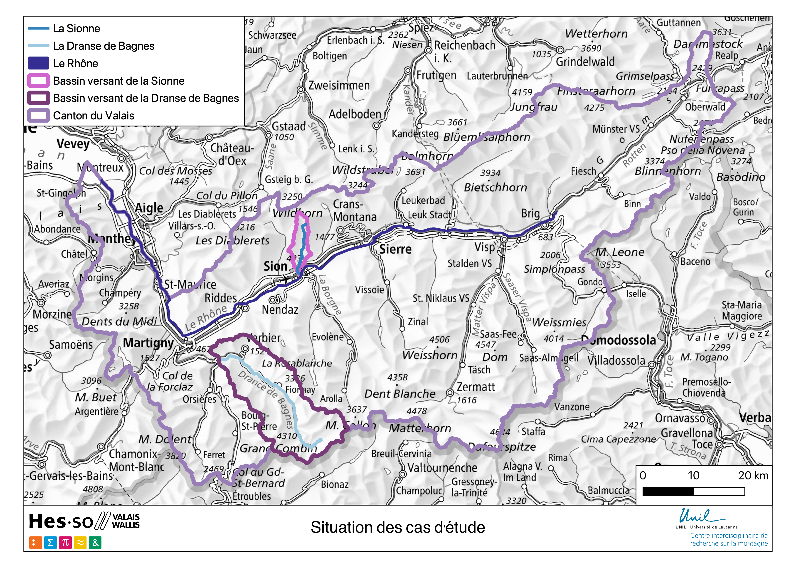
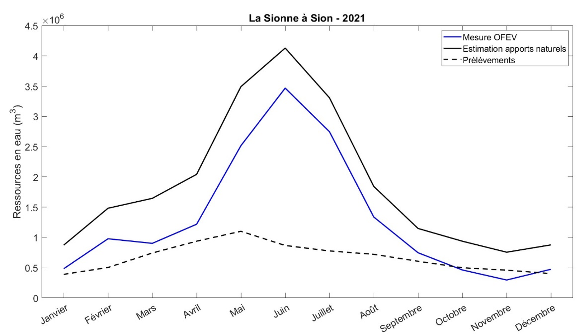
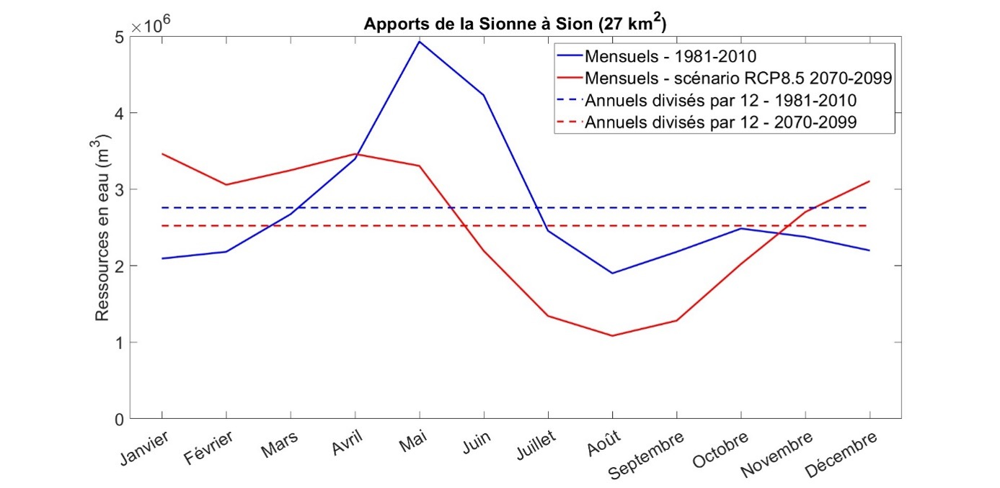
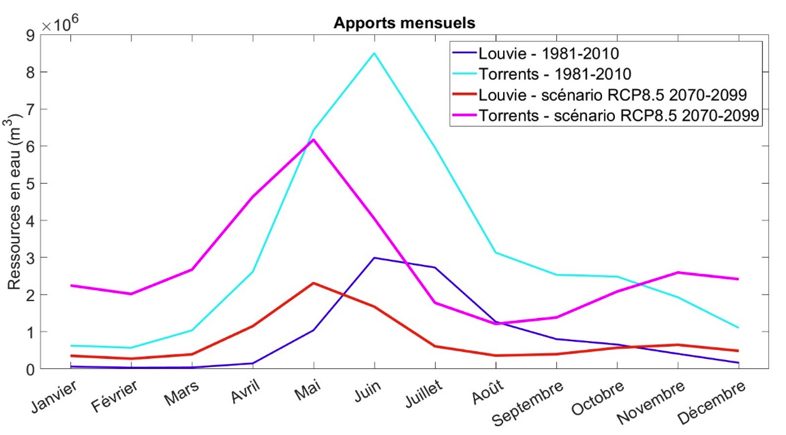

Transition énergétique et Multiusages de l’eau
Informations projet
Durée 05.2024–04.2025, 12 mois
Partenaires HES-SO Valais-Wallis, CIRM/UNIL, Altis, OIKEN, Communes Val de Bagnes, Arbaz, Grimisuat, Sion, Savièse
Financement - Service des hautes écoles, Canton du Valais
Transition Énergétique : synergies et impacts sur la gestion de l’eau.
STREAM



Figure 1 A gauche, Lac de Louvie (cérdit M. Delalex). A droite, les deux zones d’étude : le bassin versant de la Sionne (en rose), celui du Val de Bagnes (en violet foncé). En bas, vue sur le vallon de la Sionne depuis Sé rouge (Crédit F. Mettra).
Contexte et objectifs
Ce projet visait à dresser un état des lieux des ressources en eau et de leurs usages (eau potable, irrigation, hydroélectricité, usages thermiques, tourisme) sur deux bassins versants valaisans, afin d’identifier les rivalités et synergies entre usages dans le contexte de la transition énergétique et du changement climatique. Pour le bassin versant de la Sionne, l’année 2021 a été choisie car elle permettait une comparaison entre communes. Pour le Val de Bagnes, le choix s’est porté sur l’année 2023. Toutefois l’année 2022, plus sèche, est parfois étudiée pour une vision plus contrastée.
Résultats
Bassin versant de la Sionne (Sion, Arbaz, Grimisuat, Savièse)
Le volume sortant sur la Sionne (2021) est de 16 millions de m³ mais les débits mesurés à l’exutoire ne reflètent pas le régime naturel. Pour calculer les volumes d’eau prélevés sur la Sionne (cf Figure 2), nous avons soustrait des prélèvements de 8 millions de m³ (captages de sources, prises d’eau) les apports extérieurs correspondant à 3 millions de m³ (transferts par les bisses depuis les bassins voisins). La demande estivale (≈ 600’000 m³/mois) est près du double de la demande hivernale, du fait de l’irrigation.

Figure 2 : Estimation des apports naturels, des volumes d’eau mesurés par l’OFEV à l’exutoire du bassin versant et des prélèvements dans le bassin versant pour l’année 2021.
L’utilisation des scénarios Hydro-CH 2018 a permis d’estimer l’évolution future des débits à l’exutoire (cf Figure 3) : à noter que ces scénarios utilisent des modèles calibrés sur les débits modifiés par l’anthropique.
L’eau potable est également valorisée par 6 turbines en cascade : les sources d’Arbaz sont turbinées sur deux paliers (Comba Energies, Sionne Energies), complétées par 4 turbines OIKEN. La production annuelle totale varie de 6 à 7 GWh (2021–2023), équivalant à la consommation électrique estimée des habitants d’Arbaz et Grimisuat.

Figure 3 : Estimation des apports naturels de la Sionne à Sion pour la période de référence (1981-2010) et à la fin du siècle (2070-2099) selon le scénario à forte émission de gaz à effet de serre (RCP 8.5), grâce aux données HydroCH-2018
Val de Bagnes (rive droite jusqu’à Louvie)
Les ressources en eau de surface ont été évaluées via le lac de Louvie (volume total de 450’000 m3), les 77 sources captées, et les 12 prises, utilisées pour l’irrigation, sur les torrents latéraux de la Dranse grâce à l’utilisation des données Hydro-CH2018. La ressource naturelle sur les torrents est nettement supérieure aux apports au lac tout au long de l’année, avec un pic en juin (cf. Figure 3), cependant le lac permet de disposer d’eau potable en hiver et d’eau pour l’irrigation dans le cas d’année très sèche.
6 turbines (sur 9 sur la commune) se situent dans le périmètre d’étude, turbinant à la fois l’eau potable (4 turbines, secteur Verbier) et l’eau brute destinée à l’irrigation (Pas du Lein et Cries). La production annuelle sur l’ensemble de la commune (hors turbinage sur eaux usées) varie de 10 à 17 GWh (2022–2024), l’augmentation étant liée à la mise en service de la centrale de Montoz (2024). En 2023, la production (13 GWh) est proche de la consommation électrique estimée des 10’534 habitants. Le lac de Louvie joue un rôle de stockage qui permet d’étaler la production dans le temps, contrairement à la Sionne où la production suit directement la fonte des neiges.

Figure 4 Estimation des apports au lac de Louvie et des volumes disponibles au niveau des prises d’eau sur les torrents latéraux (apports au lac de Louvie inclus) pour la période de référence (1981-2010) et à la fin du siècle (2070-2099) selon le scénario à forte émission de gaz à effet de serre (RCP 8.5), selon les données d’Hydro-CH2018.
Constats transversaux
Dans les deux bassins, les pics de ressources (printemps-début été) ne coïncident pas avec les pics d’usages (juillet-août). Les scénarios futures (RCP 8.5, 2070–2099) prévoient une réduction des débits d’avril à octobre et une augmentation hivernale, ce qui accentuera le décalage entre les pics des ressources et d’usages. La production hydroélectrique devrait voir son pic se décaler vers avril, avec une variabilité interannuelle croissante.
L’étude souligne un fort besoin de données de monitoring et la nécessité de modéliser la gestion des réseaux pour tester des scénarios d’allocation de la ressource.
Ce travail comportait également d’autres contributions sur les différents usages de l’eau et la cartographie des différents périmètres, disponible dans les documents cités ci-dessous.
Qui a participé ?
HES-SO Valais-Wallis (F. Mettra, E. Neveu, G. Houillon, T.Rey)
CIRM/UNIL
Altis, OIKEN
Communes Val de Bagnes, Arbaz, Grimisuat, Sion, Savièse
Service des hautes écoles, Canton du Valais
BlueArk
Valorisation
Média
VdB Mag (juin 25, https://www.valdebagnes.ch/_docn/5824147/VdBMag_10-WEB.pdf)
ARPEA MAG (juil.), RhôneFM (juil., https://www.rhonefm.ch/valais/lhiver-verra-une-hausse-des-ressources-en-eau-tandis-que-lete-connaitra-une-forte-baisse-1049651),
Aqua & Gas (sept., https://www.aquaetgas.ch/fr/eau/eau-potable-et-eaux-souterraines/20250905-ag09-périmètres-pour-la-gestion-intégrée-de-l-eau/), BlueArk (sept., https://blueark.ch/news/gestion-de-leau-en-valais-et-transition-energetique-un-equilibre-delicat-a-preserver/)
Scientifique :
- BlueArkConference (nov 2024)
Vidéo : https://youtu.be/dj4esbusJNc?si=Yzwsoi1PtHctMh9C
Liens :
Rapport disponible
https://serval.unil.ch/fr/notice/serval:BIB_6CD5ED2B9DEB